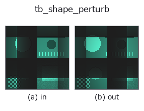

typed op• Data kinds: points → points
• Call: fullseye.apply(img, "tb_shape_perturb", a=0.5, b=0.5) (the 2-D model is one image plus two scalar knobs a,b∈[0,1])

*The figure is the actual output on a synthetic 128×128 input. Left: input, right: output. Point clouds are drawn as a top-down scatter (brightness = z), 1-D series as a line plot, volumes as the maximum-intensity projection along z, videos as the middle frame, complex images as magnitude; return values that are not pictures are shown as the values themselves.*
Sweeping knob a (0.1 / 0.5 / 0.9, the other knob at its default):
▸ tb_shape_perturb: knob a sweep (docs site)
Sweeping knob b (0.1 / 0.5 / 0.9, the other knob at its default):
▸ tb_shape_perturb: knob b sweep (docs site)
Stages (the ops that come before → this op, left to right):
▸ tb_shape_perturb: stages (docs site)
On other images (synthetic scene / photo / coins. Top row: inputs, bottom row: their outputs. Knobs at default):
▸ tb_shape_perturb: other inputs (docs site)
> This operator's description has not been translated yet. The original text follows as it is.
形に既知の変形を 1 つ入れる。→ `(N, 3)`。
`mode`:
• `"bulge"` —— *center* のまわりをガウス重みで外向きに膨らませる。
片側だけに入れれば左右非対称性の真値になる。
• `"shift"` —— *center* 方向へ一様に平行移動(Procrustes が消す成分)。
• `"scale" —— 一様拡大(scaling=True` の Procrustes が消す成分)。
• `"noise"` —— 等方ガウス雑音(どの手法でも消えない床)。
「Procrustes が消してくれる変形」と「消してはいけない変形」を分けて試せる
ように 4 つ置いてある。位置合わせの検算はこの区別が要る。
2-D 進化レジストリへ橋渡しした shapestat の op `shape_perturb。実装は同じで、呼び出し規約だけ op(v, a, b) に合わせてある。a が amplitude(既定 0.05)、b が sigma`(既定 0.4)を振る。
• Sample-data catalog (download URLs / licences) — 2-D uses skimage.data (BSD/public domain) plus synthetic images; 3-D lists download URLs for real data sources (Stanford, PDS, …).
• Operator provenance and references — the sources of the research/methods this op family came from.
The program below has been verified to run (same input as the figure). In Studio's help this block becomes buttons that load and run it on the spot.
img_to_points 0.50 0.50 tb_shape_perturb 0.50 0.50
▸ Load this pipeline · Load & run
The examples below call the underlying ledger op shape_perturb. This bridge op is the same implementation adapted to the fn(v, a, b) convention, so the behaviour carries over unchanged (only the call form differs).
• shapestat_landmark_tour — py -3.11 examples/shapestat_landmark_tour.py
points as input)identity · tb_points_to_voxel · tb_estimate_point_normals · tb_iss_keypoints · tb_angle_3points · tb_project_points · tb_render_point_depth · tb_statistical_outlier_removal
typed)tb_points_to_voxel · tb_estimate_point_normals · tb_iss_keypoints · tb_angle_3points · tb_project_points · tb_render_point_depth · tb_statistical_outlier_removal · tb_radius_outlier_removal
*Provenance: ops.py — 2D operator registry. This per-op note is generated by tools/opdocs.py md (do not hand-edit).*
© 2026 Kazufumi Furuse — Fullseye operator documentation. Licensed under Apache-2.0.
{kind=link}
{kind=link}
{kind=link}
{kind=link}